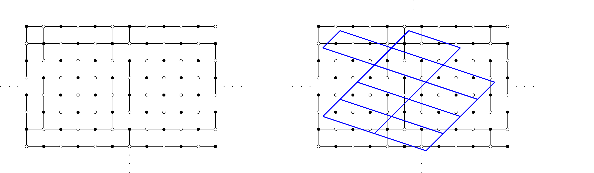
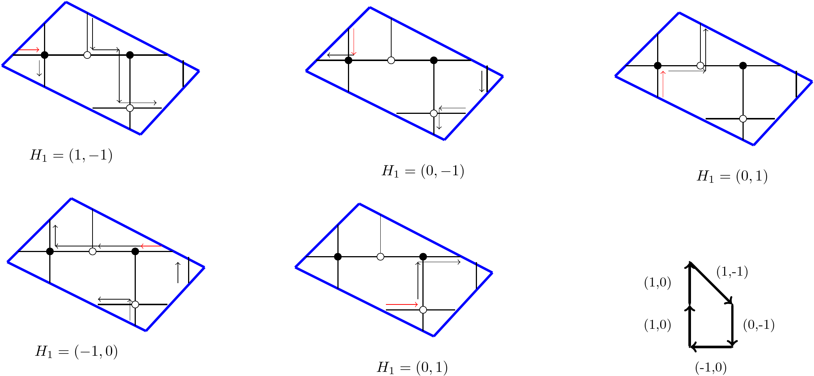

Current Research Interest
Introduction
My research interest is in integrable combinatorics and probability,
which arises from the intersection of combinatorics, statistical
mechanics, representation theory and mathematical physics. I am particularly interested in problems revolves around the \(A_\infty\) \(T\)-system in the mathematical physics
literatures, also known as octahedron recurrence relations for the one associated to \(A_\infty\) Lie algebra. Some of the research directions are reviewed on this page
The \(T\)-system
The \(A_\infty\) \(T\)-system or octahedron relation is the following recursion relation for variables \(T_{i,j,k}>0\), \(i,j,k\in {\mathbb Z}\) \[\label{Tsys} T_{i,j,k+1}\, T_{i,j,k-1}=T_{i+1,j,k}\, T_{i-1,j,k}+T_{i,j+1,k}\, T_{i,j-1,k} .\] It may be interpreted as a discrete time \(k\) evolution for the variable \(T\), expressing its value at the time \(k+1\) vertex of an octahedron in terms of the values at the 4 vertices at time \(k\) and at a single vertex at time \(k-1\). The solution \(T_{i,j,k}\) is unique once we fix admissible initial data along any given “stepped surface" \({\mathbf k}\) made of the vertices \((i_0,j_0,k_{i_0,j_0})\), \(i_0,j_0\in {\mathbb Z}\), where the height function \(k_{i,j}:{\mathbb Z}^2\to{\mathbb Z}\) obeys \(|k_{i+1,j}-k_{i,j}|=|k_{i,j+1}-k_{i,j}|=1\) for all \(i,j\in {\mathbb Z}\). My research focuses on a particular solution of the \(A_\infty\) \(T\)-system subject to initial data along \((r,s,t)\)-slanted parallel planes \[(P_m)=\{(i,j,k)\, \vert \, r i+s j+t k=m\}\] for some fixed integers \(r,s,t\geq 0\) such that \(t>\max(r,s)\) and \(\gcd(r,s,t)=1\). Together with Di Francesco, we prove the following theorem extending the previous work in1 to a specific class of graph known as pinecone in2:
Theorem 1. 3 The solution of the \(T\)-system with slanted initial data is expressed as: \[T_{i,j,k}=\sum_{{\rm dimer}\, {\rm configs.}\, D\atop {\rm on}\, \mathcal G} \prod_{{\rm faces}\, (x,y)\atop {\rm of}\, G}\begin{cases} (t_{x,y})^{v_{x,y}/2-1-N_{x,y}(D)} & (x,y) \ \text{interior faces} \\ (t_{x,y})^{1-N_{x,y}(D)} & (x,y) \ \text{boundary faces} \end{cases}\] where the sum extends over all dimer configurations \(D\) on the pinecone graph \(\mathcal G\), while \(v_{x,y}\) is the valency of the face \((x,y)\) and \(N_{x,y}(D)\in \{0,1,...,v_{x,y}\}\) denotes the number of dimers occupying the edges at the boundary of the face \((x,y)\).
ACSV and Arctic Curves
For fixed values of \((r,s,t)\) the simplest solution of the \(T\)-system [Tsys] corresponds to choosing uniform initial data in each initial data plane \((P_\ell)\), \(\ell=0,1,...,2t-1\). More precisely, choosing the initial values of \(T\) to be \(T_{i,j,k}=a_\ell\) for all \((i,j,k)\in (P_\ell)\) for some positive real numbers \(a_0,a_1,...,a_{2t-1}\), we deduce that for all \(m\geq 2t\): \[T_{i,j,k}=a_m \qquad (i,j,k)\in (P_m)\] where \(a_m\), \(m\geq 2t\) are subject to the “Gale-Robinson" recursion relation \[a_m \, a_{m-2t}=a_{m+r-t}\, a_{m-r-t}+a_{m+s-t}\, a_{m-s-t}\] Among these solutions a particularly simple one consists in taking \(a_\ell={\alpha}^{\ell(\ell-1)/2}\) for \(\ell=0,1,...,2t-1\), leading to \(\displaystyle a_m={\alpha}^{m(m-1)/2},(m\in {\mathbb Z}),\) provided \({\alpha}\) satisfies \(\displaystyle{\alpha}^{t^2} ={\alpha}^{r^2}+{\alpha}^{s^2}\).
Pick a point \((i_0,j_0,k_0=k_{i_0,j_0})\) belonging to one of the initial data planes \((P_{ri_0+sj_0+tk_0})\) with \(0\leq r i_0+s j_0+t k_0<2t\)). Assume it corresponds in the dimer graph to the center of a \(2v\)-valent face. As the local contribution for this face to the partition function is \((t_{i_0,j_0})^{v-1-N_{i_0,j_0}(\mathcal D)}\), we may write \[\label{averageD} \rho^{(i_0,j_0,k_0)}_{i,j,k}:=\frac{1}{T_{i,j,k}}\, t_{i_0,j_0} \partial_{t_{i_0,j_0}} (T_{i,j,k}) =\langle v-1- N_{i_0,j_0}(\mathcal D) \rangle_{i,j,k}\] where \(\langle f \rangle_{i,j,k}\) stands for the statistical average of the function \(f\) over the dimer configurations \(\mathcal D\) for the \((i,j,k)\) dimer model, and where \(k_0=k_{i_0,j_0}\) indicates the time variable along the initial data surface. This density is an order parameter for the crystalline/liquid phases of the model, namely \(\rho^{(i_0,j_0,k_0)}_{i,j,k}\) vanishes identically in the crystal phase, while it fluctuates and becomes non-zero in the liquid regions. Via the framework of Analytic Combinatorics in Several Variables (ACSV) developed by Baryshnikov, Pemantle and Wilson4–6, we computed the arctic curves of the octahedron recurrence with some special initial conditions:
Theorem 2. 3 The limit shape of typical large size (r,s,t)-pinecone domino tilings associated to the solution of the \(T\)-system with uniform initial data \(t_{i,j}={\alpha}^{m(m-1)/2}\) on each slanted plane \(m=ri+sj+tk = 0,1, \cdots, 2t-1\), is the ellipse \[\label{arcticu} (1-A)\,t^2u^2+A\,t^2v^2-A(1-A)\,(r u+s v+t)^2 =0\] where \(A=A_{r,s,t}:={\alpha}^{r^2-t^2},\qquad 1-A={\alpha}^{s^2-t^2}\) inscribed in the scaling domain \[\begin{aligned} v&=-\frac{t}{t+s}-\frac{t+r}{t+s}\, u , \qquad v=-\frac{t}{s-t}-\frac{t+r}{s-t}\, u \qquad \left(u\in\left[-\frac{t}{t+r},0\right]\right)\\ v&=-\frac{t}{t+s}+\frac{t-r}{t+s}\, u, \qquad v=-\frac{t}{s-t}+\frac{t-r}{s-t}\, u \qquad \left(u\in \left[0,\frac{t}{t-r}\right]\right) . \end{aligned}\]
By introducing the periodic initial data, we computed more arctic curves of this dimer model with now additional gaseous phases in Fig. 1
,
Newton Polygon and Integrable System
Kenyon, Okounkov and Sheffield developed the theories of limit shapes for dimer on embedded bipartite periodic graphs in7,8. Without considering the weight from the previous section, the graph coming from the set of parallel planes can be realized as a periodic graph on a torus:
Example 3. The slanted \((1,1,3)\) \(T\)-system initial data viewed as graph on torus is in Fig. 2
 
From the description of the Newton polygon, if the weights on this bipartite graph on the torus is fully periodic, then one should witness five frozen regions. Our result from the previous section, however provides in the scaling limits with only four frozen regions in the uniform case and with gaseous regions in the case of periodic weights on each initial data planes. A natural question to ask from this result would be: Is there a gauge equivalent transformation in weights mapping the limit curves coming from two different methods. This question will be discussed in an upcoming research.
It is also worth mentioning that the zigzag paths, with edge weights on the bipartite dimer graph can be used to compute the Hamiltonians and Casimirs of the cluster integrable system introduced by9. In10, Vichitkunakorn proved that the Hamiltonians coming from the cluster integrable system is consistent with the conserved quantities of the \(Q\)-system, which can be seen as the combinatorial limit of the \(T\)-system. One then can ask the question of finding the relations between the conserved quantities of the \(T\)-system (some of these are mentioned in11–13) and the Hamiltonians of the cluster integrable system coming from the dimer model corresponding to \(T\)-system initial data.
\(t\)-embedding
Recently, another interesting research in dimer model lies in the work of \(t\)-embedding (also known as Culomb gauges) by14,15 and the application of the discrete complex analysis techniques in probability and statistical physics. The existence of perfect \(t\)-embedding is still an open question as the construction of the object is susceptible to the boundary conditions. In 2023, Bergren, Russkikh and Nicoletti showed the existence of perfect \(t\)-embedding for a class of graph called tower graph, and previously Chelkak and Ramassamy16 showed the existence for the well-celebrated Aztec Diamond. Both of this graph can be equivalently defined for a suitable \((r,s,t)\)-slanted initial data from the \(T\)-system. In future research, we want to show the existence of (perfect) \(t\)-embedding for this class of bipartite graph from the \(T\)-system initial data.
Conjecture 4. There exists a \(t\)-embedding, potentially proper and perfect \(t\)-embedding, for the pinecone graph of the \((r,s,t)\)-slanted initial data
Once the existence of \(t\)-embedding is proved, one can use the notion of discrete holomorphicity to analyze the scaling limit and prove fluctuation results of the dimer model’s height function to standard Gaussian free field14.
\(q\)-TASEP and Difference Operator
We mentioned the "combinatorial limit" of the \(T\)-system under the name \(Q\)-system in the previous section.
Definition 5. Let \({\mathfrak{g}}\) be a simple Lie algebra with Cartan matrix \(C\), with a set of simple root index \(I_r=\{1, \ldots, r\}\). The \(Q\)-system is the family of variables \(\{Q_{{\alpha},k}| ~ {\alpha}\in I_r, k\in {\mathbb Z}\}\) satisfying: \[\label{Qsystem} Q_{{\alpha},k+1} Q_{{\alpha},k-1} = Q_{{\alpha},k}^2 - \prod_{\beta\sim{\alpha}} \mathcal T^{({\alpha},\beta)}_k, ~{\alpha}\in I_r, ~k\in {\mathbb Z},\] where \({\alpha}\sim\beta\) means \({\alpha}\) is connected to \(\beta\) in the Dynkin diagram of \({\mathfrak{g}}\), and \[\label{T} \mathcal T^{({\alpha},\beta)}_k = \prod_{i=0}^{|C_{{\alpha},\beta}|-1} Q_{\beta,\lfloor\frac{t_\beta k+i}{t_{\alpha}} \rfloor},\] where \(\lfloor a \rfloor\) is the integer part of \(a\). Here \(t_{\alpha}\) are the integers symmetrizing the Cartan matrix. Namely, \(t_r=2\) for \(B_r\), \(t_{\alpha}=2\) (\({\alpha}<r\)) for \(C_r\), \(t_3=t_4=2\) for \(F_4\) and \(t_2=3\) for \(G_2\), and \(t_{\alpha}=1\) otherwise.
This system admits the structure of cluster algebra and integrability10,17,18 and rich combinatorial properties19,20.
Switching to a different point of view, Corwin, Borodin and Sasamoto studied the \(q\)-deformed Totally Asymmetric Exclusion Process (\(q\)-TASEP)21–23. The \(q\)-moments, i.e. the family of expectations \(\operatorname{\mathbb{E}}\left[q^{k(X_N(\tau)+N)} \right]\), where \(k=0,1,2,\ldots\) can be computed via the Macdonald measure at \(t = 0\) by applying the Macdonald operator \(D_N^1\) to the Cauchy identity and exploiting the Markov duality with another process23. On the other hand, the Macdonald operators are known to satisfied the "quantum" version of the \(Q\)-system in a series of work by Kedem and Di Francesco24–27. A future research problem that was proposed by Leonid Petrov during the research program in Geometry, Statistical Mechanics, and Integrability at IPAM is to consider two different \(q\)-TASEPs:
\(X_1,X_2,\ldots\) with speed parameters \(x_1,x_2,\ldots,x_{N-1},x_N,x_{N+1} ,\ldots\)
\(\tilde X_1,\tilde X_2,\ldots\) with speed parameters \(x_1,x_2,\ldots,x_{N-1},x_{N+1},x_{N},\ldots\), which differ from the first one by the swap of \(x_{N}\) and \(x_{N+1}\).
Let both processes start from the step initial configuration \(X_i(0)=-i\), \(\tilde X_i(0)=-i\). Denote by \(D_N\) and \(\tilde D_N\) the first Macdonald operators \(D_N^1\) acting in the variables \(x_1,\ldots,x_N\) and \(x_1,\ldots,x_{N-1},x_{N+1}\), respectively, and specialized at \(t=0\). In some unpublished work, Petrov and Ahn wrote down the following relation \[(\tilde D)^k= \sum_{j=0}^k \varphi_{q,x_{N+1}/x_N}(j\mid k)\hspace{1pt} (D_N)^j(D_{N+1})^{k-j}, \qquad \varphi_{q,\alpha}(j\mid k):= \alpha^j(\alpha;q)_{k-j}\frac{(q;q)_k}{(q;q)_j(q;q)_{k-j}}.\] When \(0\le \alpha\le 1\), the quantities \(\varphi_{q,\alpha}(j\mid k)\) form a probability distribution in \(j\in \left\{ 0,1,\ldots,k \right\}\). It is worth to consider the \(t\)-deformation of the relation above. For example, when \(k=1\), we have \[\label{eq:relation_for_D_at_t_0} \tilde D = \left( 1-\frac{x_{N+1}}{x_N} \right)D_N + \frac{x_{N+1}}{x_N}D_{N+1}.\] with the \(t\)-deformation \[\label{t_analog_diff} \tilde D = \frac{x_{N+1}-x_N}{tx_{N+1}-x_N}\hspace{1pt}D_{N+1} + \frac{t x_{N}-x_{N+1}}{tx_{N+1}-x_N}\hspace{1pt}D_{N} + \frac{t(x_{N+1}-x_N)}{tx_{N+1}-x_N}\hspace{1pt}D_{N-1}.\] These \(t\)-deformed power relations may be applicable in the study of stochastic particle systems and random matrix models. For \(q=t\), the relations might be useful in the study of GUE corners process and related matrix models with unitary symmetry.